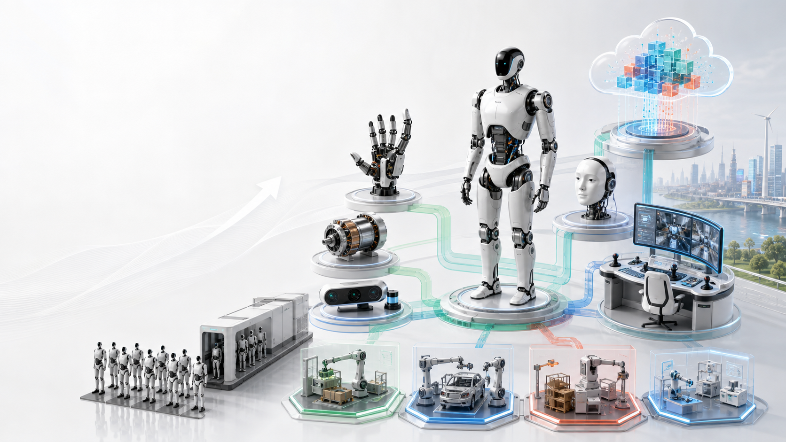

硬件组件研发
灵巧手、电机、执行器、触觉、传感器、拟态面部、轻量结构件。
- 优势来自可靠性、寿命、成本和量产一致性。
- 适合精密制造、汽车零部件、消费电子供应链公司。

机器人产业正在从“实验室演示”进入“低成本本体 + 大模型 + 数据飞轮 + 场景运营”的组合阶段。窗口并不意味着所有公司都适合做整机，而是意味着产业链会重新分工。
工信部对 2025、2027 分阶段目标已有明确表达：关键部组件、整机、软件、场景和标准都会被持续推动。
中国是全球最大的工业机器人市场，供应链、代工、精密制造、汽车和消费电子产业都能为机器人降本。
视觉语言动作模型让“看懂环境、听懂指令、拆成动作”成为长期方向，但模型要落地仍然需要真实机器人数据。
企业客户不会为表演买单。它们需要稳定替代某类工序、降低人力波动、减少危险作业，或提高服务一致性。
越靠近底层，技术壁垒和研发投入越高；越靠近场景，现金流更早，但需要强运营和客户理解。
灵巧手、电机、执行器、触觉、传感器、拟态面部、轻量结构件。
人形、轮式双臂、四足、移动底盘、协作机械臂和复合机器人。
机器人“大脑”、运动“小脑”、VLA、世界模型、仿真训练和任务规划。
遥操作、示范数据、标准任务库、仿真数据、评测基准和数据清洗。
把机器人、模型、遥操作、维护和保险打包成“可租的机器人劳动力”。
把通用机器人改造成懂工序、懂系统、懂安全规范的行业员工。
下面六类机会可以独立成立，也可以组合成一家公司的核心战略。区别在于：你更擅长造部件、造机器、造模型、造数据，还是造行业解决方案。
关键词：灵巧手、高功率密度执行器、力觉触觉、拟态面部、传感器、轻量结构。
机器人整机会经历反复洗牌，但好部件可以穿越周期。灵巧手决定机器人能不能拿起真实世界中形状各异、软硬不同、姿态随机的物品；电机、减速器和执行器决定成本、噪音、寿命和安全；触觉、力觉和电子皮肤决定机器人能否从“看着像会干活”变成“真的敢接触人和物”。拟态面部和交互模块看起来更偏消费端，但在导览、陪护、教育、酒店和家庭场景里，它直接影响信任感和停留时长。
中国公司的机会在于制造体系完整，很多能力已经分散在汽车、消费电子、工业自动化、传感器和精密加工企业里。真正的门槛不是做出样品，而是做出可维护、可测试、可批量交付、跨本体复用的标准件。
卖模组、卖定制化设计、卖测试认证、卖备件和维护合同。
寿命数据、失效率、供应链成本、标准接口、客户验证周期。
过早绑定单一整机厂，或只追求参数却忽略现场维修和安全冗余。
关键词：人形、轮式双臂、四足、移动底盘、协作机械臂、复合机器人。
本体是机器人产业最吸引眼球、也最烧钱的环节。人形机器人适合改造成本高、工具和空间本来就为人设计的环境；轮式双臂适合平整地面和货架操作；四足适合复杂地形巡检；移动底盘加机械臂适合仓储、医院、半导体和产线转运。未来 3-5 年，市场会从“谁的视频更像科幻片”转向“谁能在一个工序里连续运行”。
中国本体公司的优势是迭代快、供应链近、工程师密度高、制造场景多；挑战是可靠性、售后、真实客户、量产质量和现金流。做本体的公司不应一开始就承诺“万能机器人”，而应选择一个高频、可衡量、容错边界清楚的任务作为楔子。
卖整机、卖开发者平台、卖场景套件、卖运维服务和升级包。
整机可靠性、运动控制、量产工艺、售后网络、场景数据闭环。
把融资叙事当产品战略，忽视单机毛利、备件库存和现场故障处理。
关键词：VLA、任务规划、世界模型、运动小脑、仿真训练、安全策略。
大模型公司进入机器人，不能只是把聊天机器人装进机器壳里。机器人模型需要把视觉、语言、动作、力反馈和环境状态连起来：看见桌上的杯子，理解“拿过来”的意图，知道路线、抓取姿态、力度、碰撞风险和失败后的恢复动作。国际上开放机器人数据集已经证明，跨机器人数据对通用策略有价值，但真实商用场景还要面对设备差异、传感器噪声、任务长尾和安全责任。
中国模型公司的机会，是把已有多模态模型、云计算、边缘推理、仿真平台和行业客户结合起来，做成机器人开发平台、任务编排系统和安全策略层。短期内模型不一定直接替代本体厂商，却可能成为跨品牌机器人调用任务、管理数据和评测能力的入口。
模型授权、开发平台订阅、仿真训练、任务编排、私有化部署。
高质量机器人数据、跨本体适配、低延迟推理、安全评测体系。
没有真实机器人数据，模型只能停留在语言理解，无法形成动作能力。
关键词：遥操作、示范轨迹、标准任务库、仿真数据、评测集、数据治理。
机器人数据不是普通视频。一个可训练样本通常要包含传感器输入、机器人关节状态、末端执行器动作、力觉或触觉反馈、任务结果、失败原因和环境上下文。未来一批公司会专门建设数据工厂：用遥操作采集人类示范，用仿真扩展长尾场景，用标准任务测试不同模型，再把数据清洗成可训练、可追溯、可授权的资产。
中国有大量工厂、仓库、门店、酒店、医院和园区场景，这些场景可以提供比实验室更丰富的任务分布。但数据生意不能只靠堆量，必须解决授权、脱敏、质量控制、任务定义和可复现评测。数据供应商的长期价值，是帮助模型公司和本体公司缩短从“能演示”到“能上线”的距离。
出售数据集、按任务采集、评测服务、遥操作外包、仿真数据生成。
真实场景权限、采集设备规模、数据质量标准、任务标签体系。
数据权属不清、隐私和商业机密泄露、采集成本高于训练价值。
关键词：RaaS、机器人劳动力、按小时付费、远程接管、SLA、保险。
很多客户不会马上买机器人，因为他们担心设备闲置、维护复杂、安全责任和技术迭代太快。代理租赁的逻辑是：供应商把机器人、本体软件、模型、遥操作员、现场维护、备件和保险打包，客户只为任务结果或使用时长付费。对客户来说，机器人从资本开支变成运营开支；对供应商来说，租赁网络会沉淀真实数据和客户流程。
这条路更适合有运营网络的公司，例如服务机器人厂商、园区运营商、物流服务商、设备租赁公司和行业外包公司。它的难点不在“租出去”，而在持续可用：机器人坏了谁来修，任务失败怎么赔，现场安全由谁负责，远程接管如何记录，客户如何看到 ROI。
按小时、按班次、按任务、按结果收费，叠加维护和数据服务。
调度系统、运维队伍、SLA、保险方案、客户流程数据。
现场故障率过高、单点项目不可复制、租金覆盖不了折旧和人工接管。
关键词：SOP、末端工具、系统集成、行业数据、交付模板、安全规范。
通用机器人离开实验室后，往往需要大量行业二开：接入 MES、WMS、ERP、门店系统或医院系统；适配夹具、托盘、货架、工装和安全围栏；把自然语言任务改写成企业 SOP；建立异常处理、审批和日志追踪。换句话说，行业二开公司把“能动的机器”变成“能在某个行业上岗的员工”。
这条路短期最务实。汽车、3C、半导体、仓储、巡检、零售、酒店、康养都可能先从窄任务开始，而不是立刻购买通用人形。中国的系统集成商、行业软件公司、自动化工程公司、机器人渠道商可以成为连接本体厂商和客户的关键层。
项目交付、行业模板、运维订阅、系统接口、二次开发授权。
行业 Know-how、客户关系、交付方法论、数据闭环和复用组件。
每个项目都变成定制工程，难以沉淀标准产品和可复制利润。
不要因为机器人很热就全部涌向整机。更好的做法，是把自身能力翻译成机器人产业链中的一个稳定角色。
更适合从底层模型、仿真、任务编排、开发平台和多机器人管理切入。
更适合做灵巧手、执行器、传感器、结构件和拟态交互模块。
更适合做关节、电驱、控制、产线试点和工业场景本体。
更适合做行业垂直二开、SOP 编排、系统接口和上线验收。
更适合做代理租赁、远程接管、现场运维和客户 ROI 管理。
更适合做遥操作训练场、采集外包、评测基准和人才培养。
机器人不会突然一夜之间进入所有行业。更可能出现的是：少数高频窄任务先稳定，随后形成部件、数据、模型和运维生态。
本体厂商继续打磨硬件，行业客户更关注连续运行时间、故障率和单任务 ROI。组件公司开始被更多整机厂验证。
灵巧手、执行器、传感器、数据采集场和仿真评测会更重要。模型能力开始从演示走向任务成功率指标。
汽车、3C、仓储、巡检、零售和酒店等场景出现更多可复制模板。系统集成商和运营商成为重要连接层。
客户从买设备转向买结果，机器人租赁、数据平台、多品牌调度和安全治理可能成为新的平台入口。
机器人机会很大，但并不等于每家公司都能靠概念进入。下面这些误判会直接影响战略投入。
很多任务用轮式、四足、机械臂或移动底盘更便宜、更稳定。
没有可靠身体和传感器，模型无法在真实世界稳定行动。
客户买的是连续运行、故障恢复、维护响应和可计算 ROI。
无权属、无标签、无结果验证的数据，很难变成可训练资产。
能沉淀行业模板、接口和安全规则的二开，会成为关键生态层。
本页是科普与战略讨论，不构成投资建议。公开资料用于支撑趋势判断，本项目企业库用于补充中国公司分层。